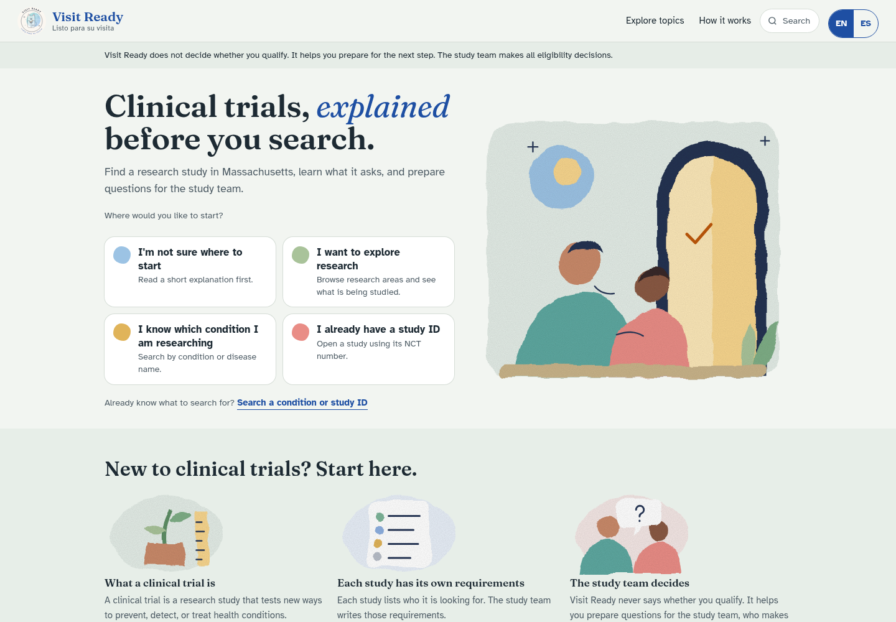

- Product
- Healthcare
Visit Ready: Clinical Research, Made More Accessible
A multilingual clinical trial discovery and preparation platform, co-developed at Hackachusetts 2026. I led frontend development and UX using React, TypeScript, and Kiro.
HackathonHealthcare & Biotech track
Hackathon project · October 24, 2026